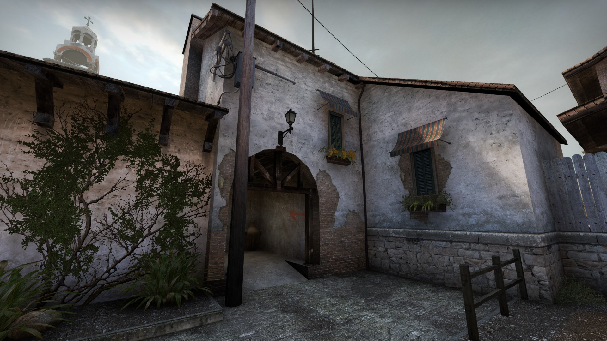

When updating the map, we aimed:
Improve visibility across the whole map
Easy moving in groups
Debug the game process by listening to the community.
Inferno is now on the reserve map list and we hope you'll play it and let us know what you think. Below we will briefly describe the map and highlight the main zones in which changes have taken place. Use the sliders to compare Inferno's old skin with the new one.. Plant А
Previously, this point seemed unattainable for terrorists: the defenders had a huge choice of advantageous positions, and it was not difficult to merge with the environment.


We primarily wanted to make possible defensive positions more obvious to attackers and give them more options to deploy smoke and blind grenades.
We have removed the hinged roof so that the laying point is better lit. This change also opens up vision between the library and the balcony, allowing you to use the sniper rifle from those positions and throw grenades directly at the point.
We replaced the notorious truck, which served as a kind of lift to the balcony, with a hay cart. It makes clear its purpose on the map and allows you to quickly climb onto the balcony.
On the high ground, we changed the fence and removed some decorative elements to make this defensive position more open. Now it is much easier to notice the player on it.

In addition to the laying point itself, the corridor leading to the balcony has also changed. We expanded it so that the attacking team can throw grenades before they are discovered. This should revive the defenders who have settled in the "sand".
We also decided to get rid of the dark room. It was too convenient in terms of protection and forced the terrorists to spend grenades on the way to the laying point.
Instead, we added a small niche, as it was in Counter-Strike 1.6. This position is much easier to deal with the enemy, but it can still be useful for the defenders.
B plant
This point, as well as the paths leading to it, caused the most discussion in the ranks of the community.


We made the passage to the point more open, which allows the attackers to move more freely. However, as in any other open space, grenades are now very effective here, so the terrorists need to be extremely careful.
We replaced the old car at the end of the street with less durable wooden shelters that can be shot through.
Defenders can peek over the new wall at the end of the street by giving their player a lift, but attackers can check the position behind it with a normal jump.
We have expanded the approach to the planting point, and also added new hideouts for attacking terrorists.
The geometry of the background objects has also been changed: special forces will no longer be able to throw grenades at point B from other parts of the map.
The bookmark itself did not go unnoticed either. We removed the gap between the containers and the column, added the ability to independently climb onto the boxes near the entrance to the point and tried to improve visibility on it in general.


Middle
The biggest change to the center of the map is that the underground passage connecting the two central streets has become taller. In order to get into it from the main central street, you still need to crouch, but approximately in the middle you will have the opportunity to stand up.
Another small but significant change: we've removed the lamppost that's been collecting millions of bullets for years, so you have fewer excuses to miss.
TERRORIST BASE
Finally, an additional exit from the terrorist base appeared, leading to the second central street.


В ЗАКЛЮЧЕНИЕ
Despite changes and improvements to the map, the gameplay on it has not changed much. By releasing the beta version of Inferno, we received valuable feedback from the players and based on it we fixed many bugs. Thanks to everyone who took part. We will continue to monitor feedback as we refine and improve the map.
See you at Inferno!